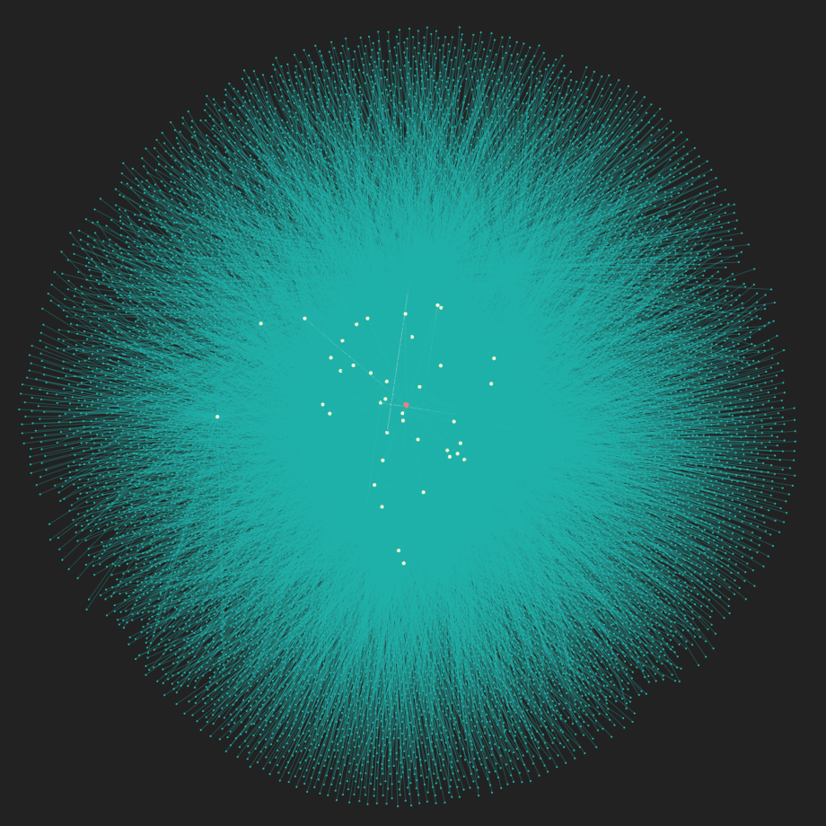
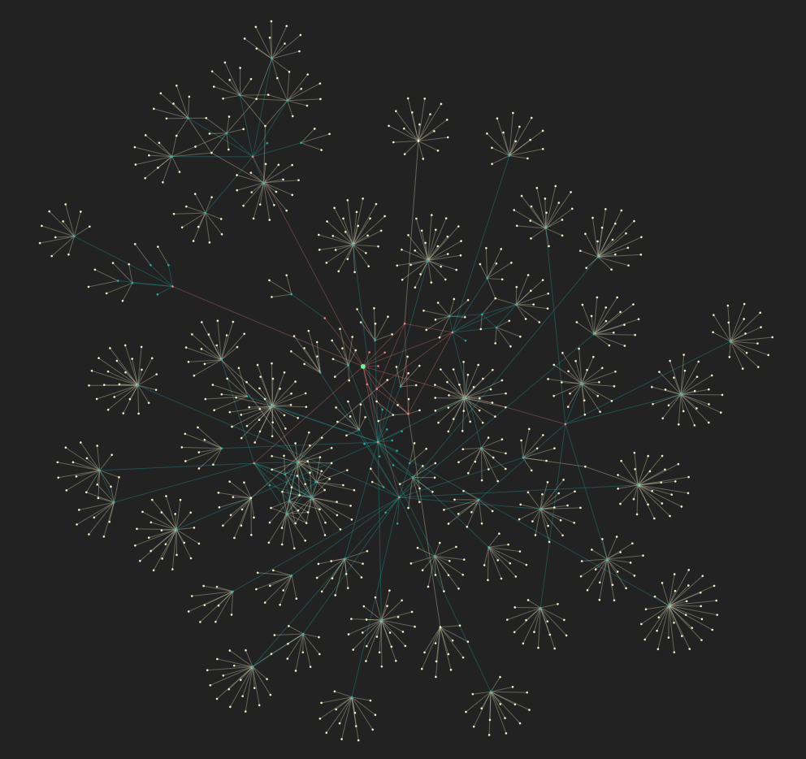

When visualizing social media networks, there are some limitations that can prove to be quite difficult to circumvent. As mentioned in the previous page, I was restricted to reduced "degrees of separation" when visualizing my Instagram and Twitter social circles. With Instagram in particular, the average number of follower/following relationships that any given user possesses typically ranges (as based solely on the users in my circle) from between 100 to 5,000, a majority of which tend to be mutual. Even with a conservative estimate of only 100 mutual relationships per user, this would quickly expand exponentially to 100^n nodes per n degrees of separation.
However, this didn't stop me from trying. Figure 2 (below) shows my first attempt at visualizing my Instagram network using only two degrees of separation, but drawing every mutual relationship present within that set. As some of my friends do fall into that 5,000+ follower range, this quickly proved to be infeasible with my current level of ability and prior experience.
Yet with the vastly reduced number of users present in my Twitter circle, I was hopeful that extending the visualization beyond two degrees would still be viable. However, I again realized that this was impractical, and beyond that, it was unnecessary for the topic I am attempting to discuss. Figure 3 (below) shows my Twitter network up to three degrees of separation; the primary issue I experienced with this iteration of the visualization was that it presented too much information to provide meaningful insight into the social platform without a much greater level of effort on the part of the viewer.
Furthermore, a large portion of user interaction on Twitter stems from Retweets that appear on the Timeline; users recycle the content from the people they follow and promote it to their followers in turn. This implies that at any given time, a user is likely experiencing influence from others within a minimum of two degrees of separation (the people that they follow, and the others users that those people follow).
Thus, I settled on using one degree of separation for the Instagram visualization due to logistical constraints, and two degrees for the Twitter visualization (similar to the one seen to the right), as I feel that it provides the most meaningful data without requiring exorbitant processing time and power.
| Figure 2 | Figure 3 |
|---|---|
|  |  |